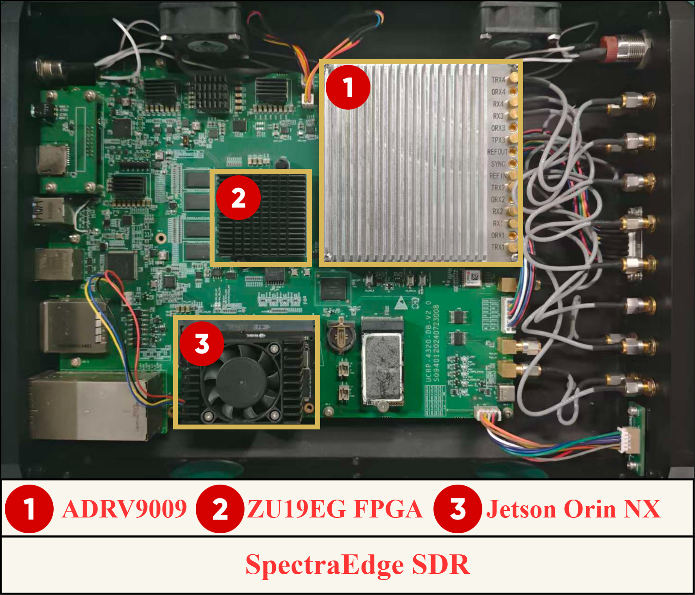

Edge-native intelligence, from signal to semantics
HELLO, PHYSICAL WORLD 👋
Zhongyi Wen 文钟毅
Ph.D. Candidate at UESTC Founder & CEO, Hansoric Intelligence Technology
I build edge-native intelligence for the physical world — from RFLM and trustworthy RF sensing to efficient inference, while advancing toward MLLMs and autonomous wireless cognitive agents.
- 📡 RF Intelligence
- 🧠 Edge LLMs
- 👁️ MLLMs
- 🤖 Agents
- ⚡ Efficient Inference
19verified research works
8first-author papers
6academic honors
1edge RF platform
FEATURED HONORS
Selected recognition in research and innovation.
IEEE ICCT Best Paper Award
Xiaomi Special Scholarship
UESTC Academic Rising Star Award
About
Researcher, builder, and founder.
My work starts with radio-frequency signals — one of the richest, most immediate interfaces between artificial intelligence and the physical world.
I study how machines can identify wireless devices reliably, adapt across changing environments, and run efficiently on resource-constrained edge hardware. I am now extending that foundation toward multimodal spectrum understanding, language-guided reasoning, and closed-loop agents.
VENTURE
Founder & CEO
Hansoric Intelligence Technology Co., Ltd.
Translating edge intelligence research into deployable systems for real physical environments.
EDUCATION
Ph.D. Candidate, Information & Communication Engineering
School of Information and Communication Engineering, UESTC
Advisor: Prof. Shafei WangB.Sc., Mathematical Basic Science
Yingcai Honors College, UESTC
Research team
Electromagnetic Cognition Applications & Advanced RF Integrated Circuits
Research focus
From raw spectrum to autonomous decisions.
A connected research agenda spanning perception, adaptation, deployment, and agentic reasoning.
RF Signal Intelligence
Self-supervised representations, device fingerprinting, and trustworthy physical-layer authentication.
RF-MAERFFISSL
Cross-domain Adaptation
Robust learning across time, receivers, channels, locations, and unlabeled deployment domains.
UDASFDAGCODWFA
Efficient Edge Deployment
Dynamic inference, early exits, FPGA preprocessing, and GPU acceleration under real constraints.
SwiftNetFPGAJetson
Edge LLMs, MLLMs & Agents
RFLM establishes instruction-conditioned RF processing; MLLMs and closed-loop agents are the next frontier.
RFLMMLLMAgent
RESEARCH ARC
One continuous path from sensing to agency.
- 📶Multi-source RF input
- 🛡️Trustworthy identification
- 🔄Cross-scene adaptation
- ⚙️Edge-efficient deployment
- 🧠Multimodal reasoning
- 🤖Closed-loop decisions
A
RFLMAn RF language model for instruction-conditioned RF processing, accepted at IEEE TMC.
B
RF-MAESelf-supervised RF foundation representations with adaptive frequency masking.
C
GCODWFAGradient collaboration and dynamic alignment for cross-domain RFFI.
D
SwiftNetCost-efficient dynamic inference for resource-constrained deployment.
Publications
A complete, linkable research record.
All verified works are shown below — no hidden tabs, no collapsed entries.
Practical systems
SpectraEdge SDR: intelligence at the RF edge.
A heterogeneous platform connecting real signal acquisition, deterministic preprocessing, and neural inference.

Built for low-latency RF recognition, multimodal spectrum understanding, and future agentic closed-loop decisions.
- 01ADRV9009
RF acquisition and digital baseband conversion
- 02ZU19EG FPGA
Real-time STFT, feature extraction, and preprocessing
- 03Jetson Orin NX
Edge-side deep learning and intelligent inference
RF Signal→ADRV9009→FPGA→Orin NX→AI Result
Honors
Recognition along the way.
UESTC Academic Rising Star Award
Academic recognition
2025 Chinese Institute of Electronics Nomination Award for the Top Ten Advances in Electromagnetic Spectrum
Scientific and technological advance nomination
UESTC Academic Seedling Award
Academic recognition
Xiaomi Special Scholarship
Scholarship
IEEE ICCT Best Paper Award
Best paper recognition
UESTC Honor ICT Academic Star Award
Academic recognition
Let's connect
Let’s turn signals into intelligence.
Open to research collaboration, ambitious edge-AI systems, and technology translation.